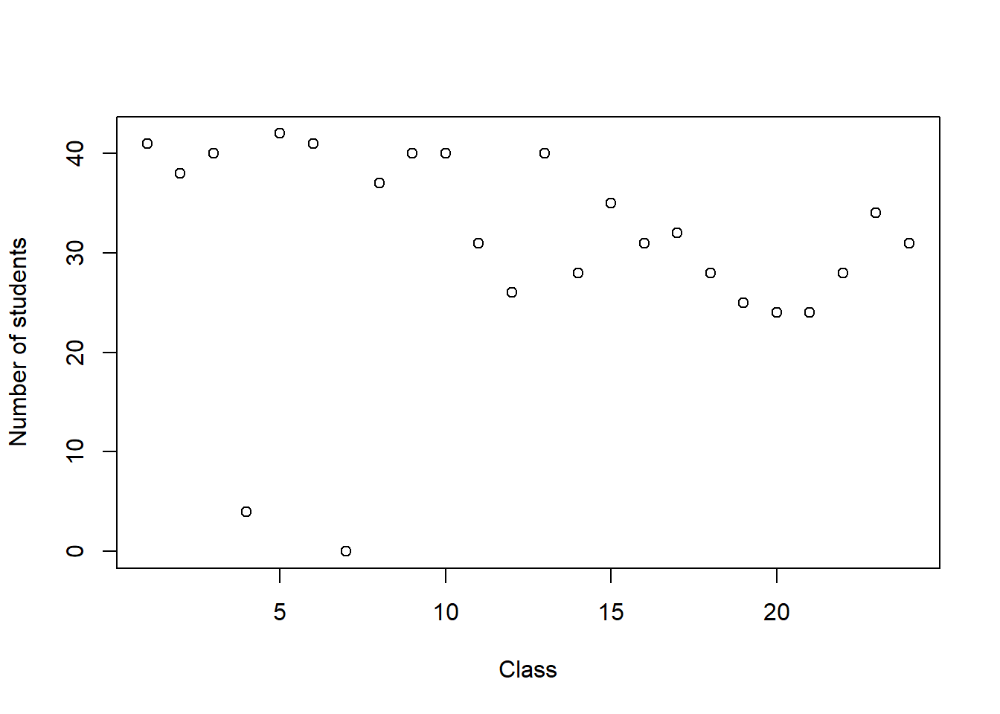

#load required packages
library(readxl)
library(tidyverse)Attendance at Modelação Ecológica
Introduction
This document will track the attendance in ME course.
It illustrates a dynamic report, where each week data changes and hence the attendance changes too.
Data have been anonymized for RGPD reasons.
Reading the data
Reading the data with function read_excel from package readxl:
attend <- read_excel("TrackAttendance.xlsx")
attend <- cbind(1:nrow(attend),attend)
names(attend)[1]<-"student"
nclasses<-24This year there will be 24 of Modelação Ecológica.
Look at the data
Count how many students per class, and then plot that information
#sum columns, except the first
index.not.aulas<-c(1,2)
plot(1:nclasses,colSums(attend[,-index.not.aulas]),ylab="Number of students",xlab="Class")
png
2 And we can see how the students are doing per MSc program. Or we might when we have enough data to do so!
#placeholder for said analysisModelling attendance
We can reshape the data from the “wide” to the “long” format, and use that to model the attendance as a function of the class. I also included the course for fun (but this can’t be interpreted yet, as the records are not complete). Later we might want to include a student random effect, since presumably some students will have a higher tendency to show in class!
attendtodate<-attend[,c(rep(TRUE,length(index.not.aulas)),colSums(attend[,-index.not.aulas])>0)]
attendtodatel<-gather(attendtodate,key=aula,value=present,aula1:tail(names(attendtodate),n=1))and then implement the model
glm1<-glm(present~aula+curso,data=attendtodatel,family=binomial)
summary(glm1)
Call:
glm(formula = present ~ aula + curso, family = binomial, data = attendtodatel)
Coefficients:
Estimate Std. Error z value Pr(>|z|)
(Intercept) 2.304e+00 4.358e-01 5.288 1.23e-07 ***
aulaaula10 -1.684e-01 5.811e-01 -0.290 0.771941
aulaaula11 -1.247e+00 5.252e-01 -2.374 0.017614 *
aulaaula12 -1.710e+00 5.180e-01 -3.302 0.000959 ***
aulaaula13 -1.684e-01 5.811e-01 -0.290 0.771941
aulaaula14 -1.529e+00 5.198e-01 -2.942 0.003258 **
aulaaula15 -8.296e-01 5.394e-01 -1.538 0.124062
aulaaula16 -1.247e+00 5.252e-01 -2.374 0.017614 *
aulaaula17 -1.148e+00 5.278e-01 -2.174 0.029679 *
aulaaula18 -1.529e+00 5.198e-01 -2.942 0.003258 **
aulaaula19 -1.800e+00 5.175e-01 -3.478 0.000506 ***
aulaaula2 -4.612e-01 5.593e-01 -0.825 0.409633
aulaaula20 -1.889e+00 5.174e-01 -3.651 0.000262 ***
aulaaula21 -1.889e+00 5.174e-01 -3.651 0.000262 ***
aulaaula22 -1.529e+00 5.198e-01 -2.942 0.003258 **
aulaaula23 -9.399e-01 5.348e-01 -1.757 0.078867 .
aulaaula24 -1.247e+00 5.252e-01 -2.374 0.017614 *
aulaaula3 -1.684e-01 5.811e-01 -0.290 0.771941
aulaaula4 -4.410e+00 6.813e-01 -6.474 9.56e-11 ***
aulaaula5 1.893e-01 6.164e-01 0.307 0.758714
aulaaula6 -1.125e-14 5.964e-01 0.000 1.000000
aulaaula8 -5.915e-01 5.514e-01 -1.073 0.283388
aulaaula9 -1.684e-01 5.811e-01 -0.290 0.771941
cursoisa -2.743e+00 5.454e-01 -5.029 4.92e-07 ***
cursona 1.522e+00 8.350e-01 1.823 0.068329 .
cursonon-BC -5.595e-01 1.594e-01 -3.509 0.000449 ***
cursonull -1.227e+00 2.212e-01 -5.547 2.91e-08 ***
---
Signif. codes: 0 '***' 0.001 '**' 0.01 '*' 0.05 '.' 0.1 ' ' 1
(Dispersion parameter for binomial family taken to be 1)
Null deviance: 1399.8 on 1103 degrees of freedom
Residual deviance: 1175.8 on 1077 degrees of freedom
AIC: 1229.8
Number of Fisher Scoring iterations: 5Note some data cleaning is required before the analysis can be looked into. Some students were not registered in class and some classes were not delivered for reasons we do not control (e.g. Ciencias Research and Inovvation Day)